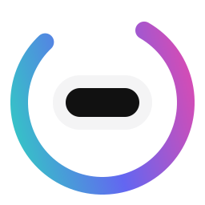
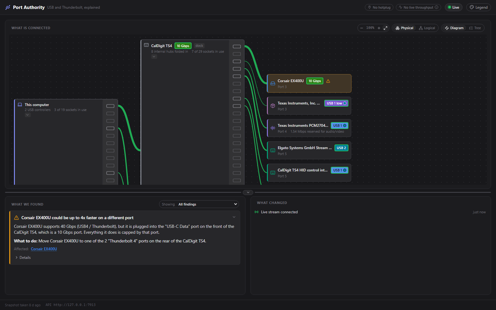
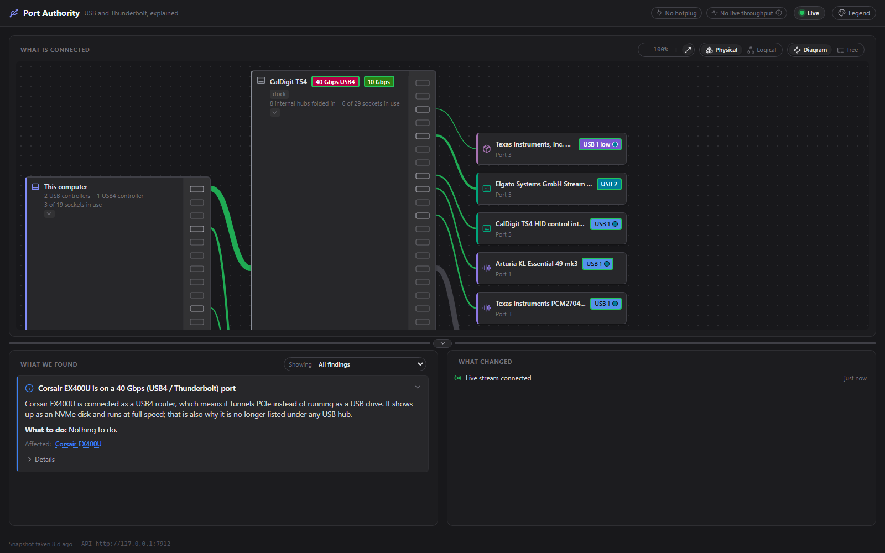
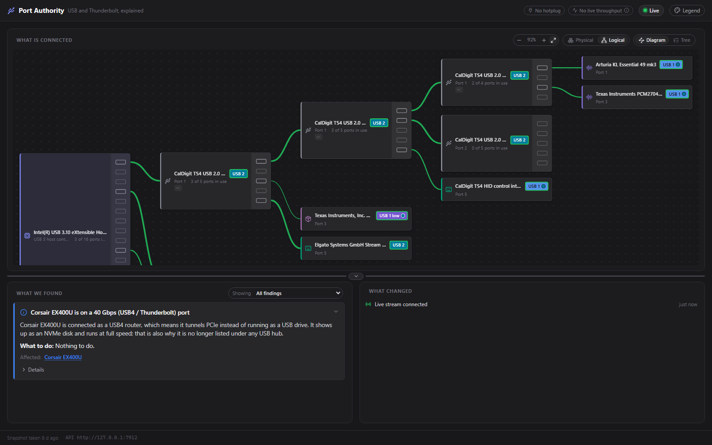
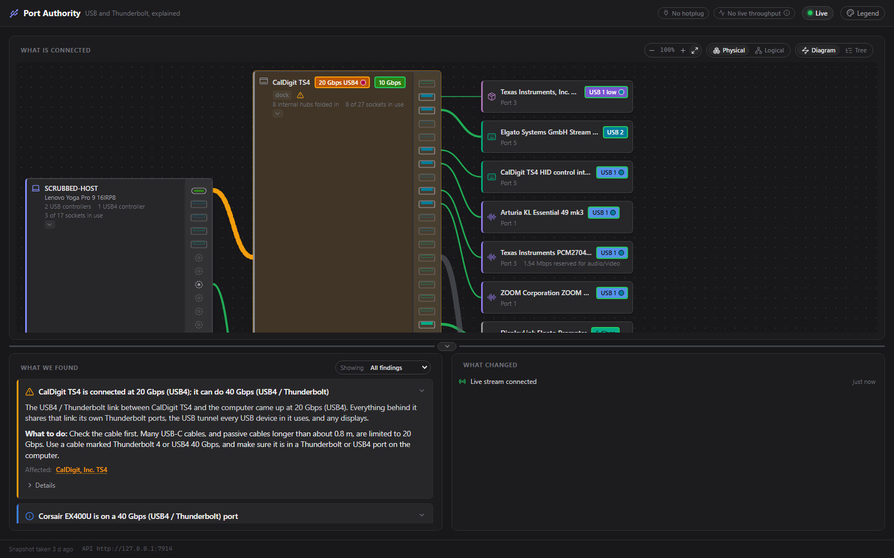
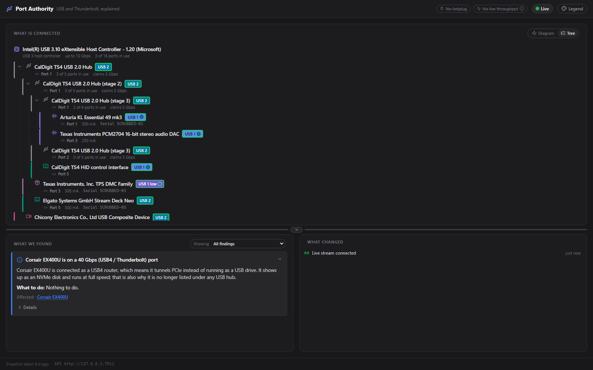

A diagram with two readings
Physical draws the boxes on your desk: one computer, one dock, one cable. Logical draws what Windows sees: every controller, every hub, every device. They disagree on purpose.

Port AuthorityEvery USB tool shows you the tree. Port Authority tells you why the drive is slow, which socket it should be in, and why your dock came up at half speed.
I built it because my new SSD was crawling. It was on the wrong port of the dock. Of course it was. Nothing on the machine would tell me that, so now something does.
Free, MIT. Nothing leaves your machine. It reads your ports and never touches them.

Findings in plain language, each with a what to do. The spec-nerd details are one click away, not in your face.
It observes and measures. It never changes a device setting, and it never sends anything anywhere.
Where Windows cannot tell two situations apart, the app shows what it measured instead of the prettier answer.
The window is a plain HTTP and WebSocket consumer of a local API. Build a better UI on it; I would love to see one.
The first thing the app ever found, on my own desk. I had plugged a 40 Gbps SSD into the one USB-C socket on the front of the dock, which is the 10 Gbps one. Moving it doubled the throughput. No new hardware, no driver, just the right socket.
Corsair EX400U supports 40 Gbps (USB4 / Thunderbolt), but it is plugged into the "USB-C Data" port on the front of the CalDigit TS4, which is a 10 Gbps port. Everything it does is capped by that port.
What to do: Move Corsair EX400U to one of the 2 "Thunderbolt 4" ports on the rear of the CalDigit TS4.
A diagram you can actually read, a list of things worth knowing, and a timeline of what changed.
Physical draws the boxes on your desk: one computer, one dock, one cable. Logical draws what Windows sees: every controller, every hub, every device. They disagree on purpose.
Per-device transfer rates from Windows' own event tracing, drawn as moving dashes on the cables. A hub's uplink carries the sum of everything behind it, so you can watch a bottleneck fill up.
Severity, a one-line headline, the reasoning, and a concrete what-to-do. Click a device's flag to filter; the device a finding names pulses in the diagram.
Hotplug events as they happen: what arrived, what left, what came up slower than last time. The moment things broke is the clue everyone loses.
To Windows a Thunderbolt dock is four or five hubs across two controllers plus a router in a different namespace. To you it is one dock. A knowledge base bridges the two, and you can teach it yours.
Device classes each get a hue, link speeds run cool to hot, and link health is a separate ring, so "how fast" and "is it right" never share a signal. There is a legend, and never colour alone.
A dock cannot tell Windows what it is. Only a person with the dock on their desk knows that those five hubs are one UGREEN adapter, or that hub port 3 is the socket printed "USB-C Data". So the knowledge base is a community project: a small public repository of docks and devices, separate from the app and MIT-licensed, so the data outlives any one program that reads it.
My own UGREEN adapter went in this week through that exact flow, without a hitch, so the pipe is real. The dock list is short today. That is where you come in.
Name the dock, pick which sockets are which.
One button, one pre-filled issue.
Validated by a workflow, reviewed by a human.
Published in minutes, fetched on next start.
Captured from my own machine and dock. Serial numbers scrubbed, embarrassment left in.




The app reports what the OS knows, and the OS does not always know. These are limits of the data rather than bugs, so they are worth recognising before filing one.
A USB-PD brick is not a USB data device, so a socket with a charger in it reads as empty. Connector-level data is on the list.
A cheap hub with two chips inside can draw as two boxes. Only its firmware knows better, and cheap firmware rarely says. Recognised docks are folded; the rest is left as reported.
The Windows collector is the only one. The architecture is macOS-ready in the "write one provider" sense, which is a real sense, but it is a weekend project.
I'm a software engineer with ~35 years in, eyeing off retirement. Port Authority is the second thing to come out of my weekends with Claude, after BRUV, and it exists for the most selfish reason there is: I wanted to know why my drive was slow, and every tool I tried answered a different question.
The rule I keep coming back to is that the app must never guess. A pretty diagram that merges two boxes that are not the same box is worse than an ugly one that tells the truth. So when the data runs out, the app says so, and asks you instead. That is what the community dock list is for.
It is an alpha. It has been thoroughly tested on one laptop and one dock, which is to say: your machine will find something mine could not. If it does, a scrubbed snapshot in an issue is the best present you can give me. If it's not for you, no worries.
— Harvey
Public alpha, Windows for now. The installer isn't code-signed, so SmartScreen will grumble at you. (Boo hoo, Windows.)